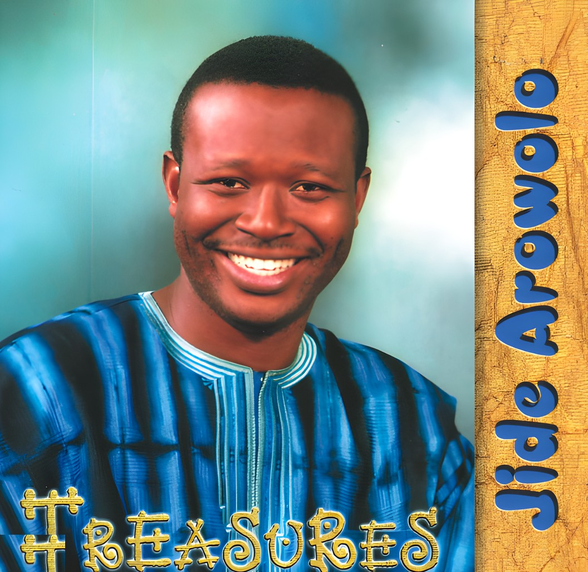

Dreams 2011
The first of a twin release with Roots, after five years spent producing other artistes. Highly inspirational, written to uplift whoever is listening.
Five albums in afro-beat, reggae, R&B, jazz and worship. Listen on YouTube, or play a sample where one is available.
The first of a twin release with Roots, after five years spent producing other artistes. Highly inspirational, written to uplift whoever is listening.

Released with Dreams as a twin CD. A sense of belonging for listeners of any origin, in Jide's native African language and English, with his voice and live instruments throughout.
Recorded at Con Dios Studio, London. A contemporary album on the message of God's love, in funk, R&B and ballad-worship, closing with an easy-listening folk medley.
Warm, relaxing and encouraging. Recorded at Yellowgate Studio in Gambia, with Senegambian Ndaga percussion, afro-beat and a Yoruba medley.

Jide's first personal album, recorded at Yellowgate Studio, Gambia. Afro-beat, reggae, salsa and contemporary jazz. Hits include Ololufe, Nibo and Kakhi No Be Leather.